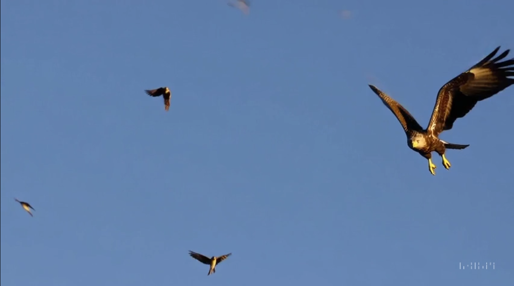

✂️ Re-cut 기능이란?
Re-cut은 **'선택과 집중'**을 위한 기능입니다. 이미 생성된 영상에서 사용자가 원하는 특정 '순간'을 포착하여, 그 순간을 중심으로 새로운 영상을 재구성합니다. 영상의 불필요한 부분을 제거하고 가장 중요한 하이라이트 장면을 강조할 수 있습니다.
- 핵심: 영상의 특정 구간을 **잘라내고(Cut), 앞뒤로 확장하여 재구성(Re-create)**
- 장점: 영상의 불필요한 부분을 제거하고, 가장 중요한 하이라이트 장면을 강조하거나 길게 늘릴 수 있음
- 원리: 사용자가 선택한 구간의 시각적 스타일과 맥락을 분석하여, 그 앞과 뒤에 이어질 장면을 AI가 새롭게 생성
🎞️ Re-cut 기능 연습 예제
미션: 여러 마리의 새 영상에서 독수리만 클로즈업하기
긴 영상에서 원하는 부분만 정확히 잘라내어 새로운 영상을 만드는 과정을 확인해 보세요.
[1단계] 기준 영상 생성하기
먼저, 여러 피사체가 포함된 긴 영상을 생성합니다.
`Many different birds, including eagles, sparrows, and pigeons, flying together in a clear blue sky.`
[2단계 & 3단계] Re-cut 적용 및 최종 결과
생성된 영상에서 `Re-cut` 버튼을 클릭하고, 타임라인에서 **독수리가 가장 멋지게 날갯짓하는 2초 구간만 정확히 선택**합니다. 선택한 구간을 앞뒤로 확장하도록 설정하면, Sora가 해당 장면을 중심으로 새로운 영상을 만들어냅니다.
[결과 영상 예상: 독수리 한 마리만 클로즈업되어 나는 하이라이트 영상]
⚠️ 주의 사항 및 PRO-TIP
- 핵심 순간을 정확히 선택: 결과물의 품질은 어떤 순간을 선택하느냐에 따라 크게 달라집니다. 가장 품질이 좋고, 강조하고 싶은 장면을 프레임 단위로 정확하게 선택하는 것이 중요합니다.
- 확장 방향을 명확히: 선택한 구간을 기준으로 앞부분만 확장할지, 뒷부분만 확장할지, 아니면 양쪽 모두 확장할지 의도를 명확히 설정해야 합니다.
- 스타일 일관성 유지: Re-cut은 선택된 구간의 시각적 스타일(색감, 조명 등)을 그대로 유지하며 확장합니다. 따라서 원본 영상에서 스타일이 일관된 부분을 선택하는 것이 좋습니다.
- Loop 기능과 연계: Re-cut으로 하이라이트 장면을 만들어낸 후, 그 영상을 다시 `Loop` 기능으로 처리하면 끊김 없이 반복되는 멋진 '움짤'을 만들 수 있습니다.